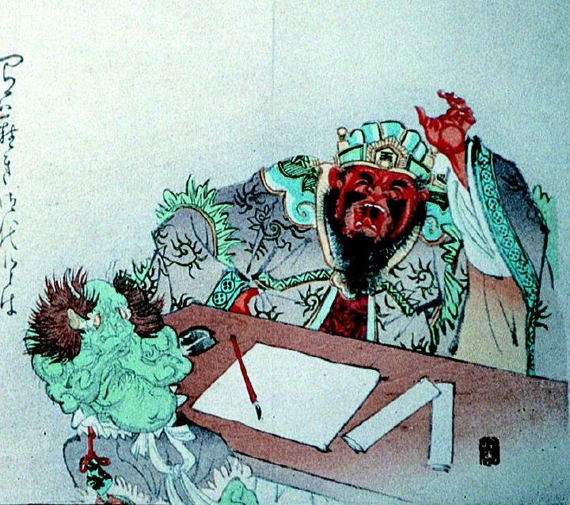

← 图鉴索引

閻魔大王の前にいる青鬼。両手で顔を覆っている。上半身が裸で、灰色のズボンをはいている。
著作者：安達吟光／出典：親書誌：A5_pushkin_0026：（閻魔大王；エンマダイオウ）／日付：2011／資源識別子：A5_pushkin_0026_0001_0000
Copyright (c)2010- International Research Center for Japanese Studies, Kyoto, Japan. All rights reserved.